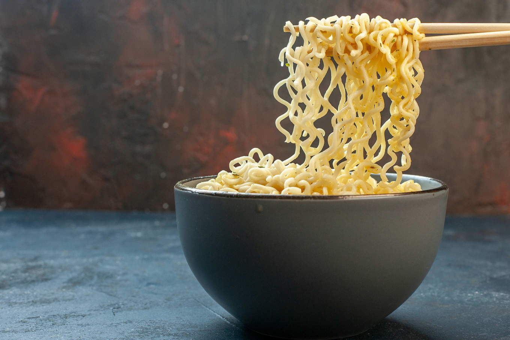

Instant noodles
This is a recipe for how to make instant noodles, as found on every package of instant noodles in like, forever.

A meal for champions! (and college students!)
Ingredients:
- noodles
- water (preferably boiling)
How to make them:
- Go to your local noodles store, purchase whatever bag of noodles that you like
- Go home again
- Boil water in a pan
- Open the noodles package and remove the small spice bag from inside
- Put the instant noodles in the boiling water pan
- Add the spices, stir, enjoy! (Chopsticks optional, forks works as well)